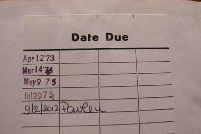

Library Book
Yesterday at the library:

Apparently, The Wapshot Chronicle hasn’t been popular in Rome since 1975. Though it was John Cheever’s first book, written in the 1950’s, it only enjoyed some success here when he won the Pulitzer.

As you can see, I have a month to read it. And I’ll crack its creaky spine open once I finish the first Hemingway I’ve read since The Old Man and the Sea, in high school. I’m reading Hemingway because of Cheever. And I’m wishing that the electrician would show up to fix our clothes washer because we haven’t had clean clothes since before Christmas.
· · · · · · · · · · · · · · · · · · · ·